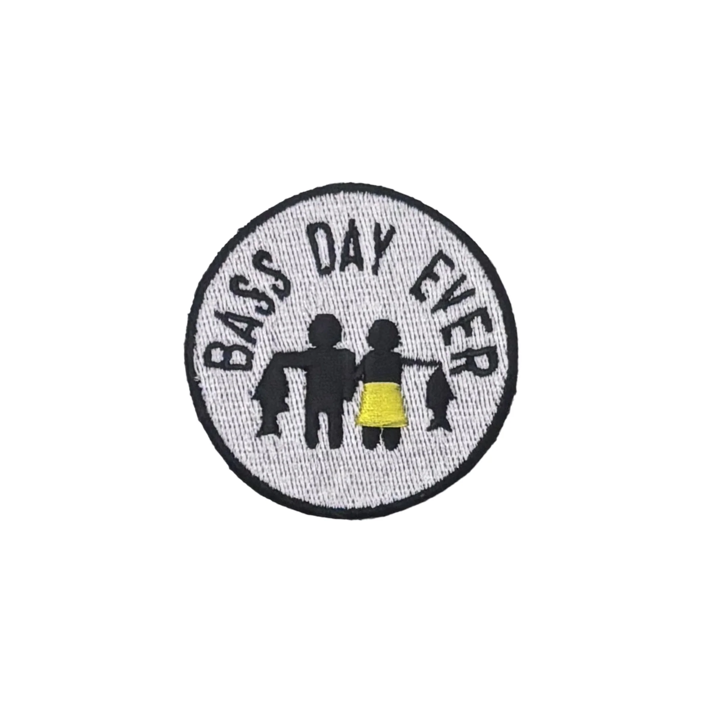
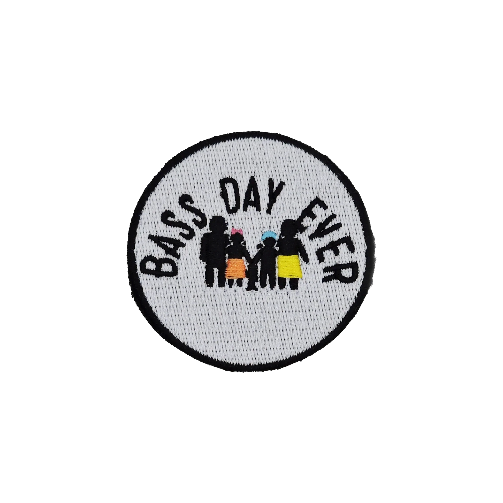

Father + DaughterTwo anglers. One tradition.
Fish more. Bring the family. Take the dog. Make the kind of memories that happen on the water.
SEE THE PATCHES →


The actual Bass Day Ever family artwork now lives directly in this demo instead of placeholder graphics.
If you have a bait, accessory, tool or fishing idea, show Bass Day Ever what you built.
SELL YOUR GEAR WITH US →Send the idea, photos or prototype.
02 • TALK FISHINGWhat does it solve and who does it help?
03 • BUILD TOGETHERExplore the opportunity.